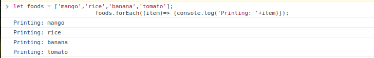

Write the Difference between Map(),Filter(),forEach() and Find()?
map method receives a function as a parameter. Then it applies it on each element and returns an entirely new array populated with the results of calling the provided function.
forEach() is used to execute the same code on every element in an array but does not change the array and it returns undefined.
filter() checks every element in an array to see if it meets a certain criteria and returns a new array with the elements that return truthy for the criteria.
find() is a search function like the previous but they differ in one small detail — this function returns only one match in an array. If in an array is more than one result, the function will return the first that has matched.
| map() | forEach() | Filter() | Find() | |
|---|---|---|---|---|
| 1 | map method receives a function as a parameter. Then it applies it on each element and returns an entirely new array populated with the results of calling the provided function. |
forEach() is used to execute the same code on every element in an array but does not change the array and it returns undefined. |
filter()checks every element in an array to see if it meets a certain criteria and returns a new array with the elements that return truthy for the criteria. |
find()is a search function like the previous but they differ in one small detail this function returns only one match in an array. If in an array is more than one result, the function will return the first that has matched. |
| 2 |
let cost = [100,400,300,700]; let newCost = cost.map(function(costItem){ return costItem / 10; }); console.log(newCost); |
let food = ['mango','rice','pepper','pear']; |
let cost = [100,400,50,40,700]; |
let cost = [100,400,50,40,700]; |
| 3 |  |
 |  |
 |
How will you select HTML elements using DOM? Name the DOM methods?
What is event bubble?
What is a callback function and why will you use it?
A function that called after main function successfully executions
it's called Callback Function.which means that the program can
continue to run while the operation is being executed.
Why we use it
If we need an operation that will be trigger after another operation
executions then we should use callback function. We can passed it as
an argument of the main function.